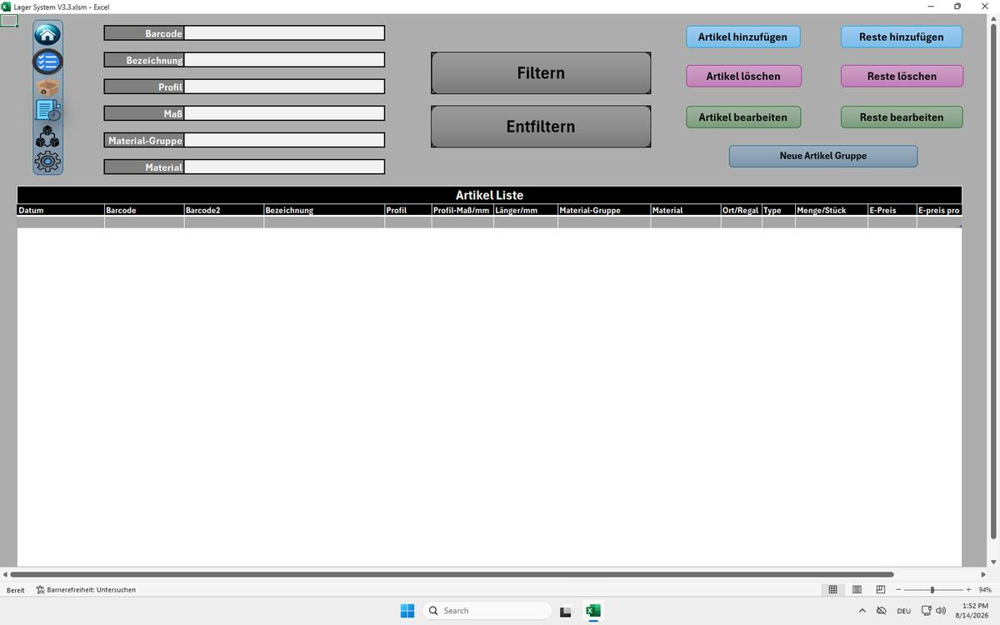
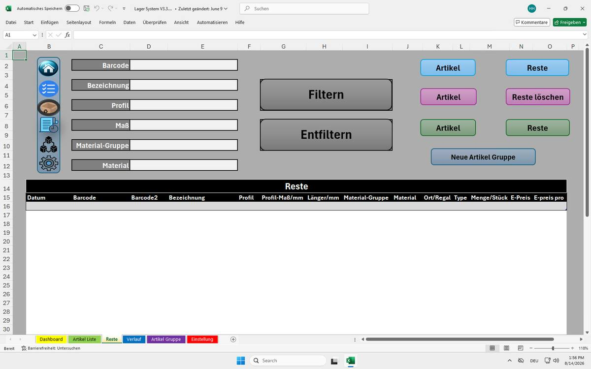

Tablet-Modus
Für den Einsatz direkt in der Werkstatt: reduzierte Oberfläche ohne Excel-Chrome.

Ribbon, Formelleiste und Blattreiter sind ausgeblendet, stattdessen eine schmale Icon-Leiste links zur Navigation zwischen den Blättern – wirkt wie eine eigenständige App statt einer Excel-Tabelle.
Entwickler-Modus
Für die Bearbeitung: volle Excel-Oberfläche inklusive aller Blattreiter.

Mit sichtbarem Ribbon und farbcodierten Blattreitern (Dashboard gelb, Artikel Liste grün, Reste weiß, Verlauf blau, Artikel Gruppe magenta, Einstellung rot) – hier zu sehen: das Blatt „Reste“ für Restlängen und Verschnitt.
Ein Klick auf denselben Button schaltet zwischen beiden Modi um –
APPModus_Umschalten() prüft einfach, ob die Formelleiste
gerade sichtbar ist, und ruft je nachdem
Entwickler_ModusAktivieren oder
APP_ModusAktivieren auf.
Automatischer Zellschutz beim Öffnen
Neu im Endstand: Beim Öffnen der Datei werden zunächst gezielt nur die wirklich benötigten Zellen/Spalten freigegeben, danach werden alle Blätter gesperrt. So lässt sich nichts aus Versehen überschreiben – bedient wird ausschließlich über Buttons, Formulare und die freigegebenen Eingabefelder.
' Wird automatisch beim Öffnen der Datei ausgeführt
Private Sub Workbook_Open()
Call SheetsEntsperren
' Nur die wirklich nötigen Zellen editierbar lassen
Call ZellenOeffnen(Sheets("Dashboard"), "C23", "C28", "G13", "L13")
Call ZellenOeffnen(Sheets("Artikel Liste"), "A:Q")
Call ZellenOeffnen(Sheets("Reste"), "A:Q")
Call ZellenOeffnen(Sheets("Verlauf"), "A:Q")
Call ZellenOeffnen(Sheets("Artikel Gruppe"), "A:G")
Call SheetsSperren ' alle Blätter wieder schützen
Call APP_ModusAktivieren ' Tablet-Modus aktivieren
End Sub
Die vier Formulare (UserForms)
frmArtikelDetails
Details eines neuen Artikelstücks erfassen: Ort/Regal, Type (Voll/Rest), Länge, Menge, E-Preis – mit Eingabeprüfung.
frmArtikelGruppe
Neue Artikelgruppe anlegen: Profil, Maß, Material auswählen bzw. eingeben.
frmBarcodeEingabe
Barcode manuell eingeben, wenn kein Scanner zur Hand ist.
frmMaterialEntnahme
Restentnahme aus einem vorhandenen Stück, inklusive Auswahl passender Reststücke per ComboBox.